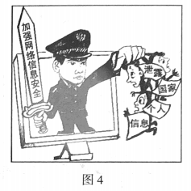
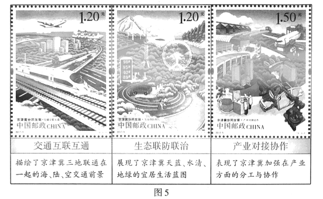

2018年北京市中考政治试题 · 选择题 第16、17、18、19、20题
依托“墨子号”量子科学实验卫星,我国某量子研究团队实现了多项世界领先的量子通信技术突破。回答第3、4题。
16.观察图4,以下认识正确的是

①国家保护公民个人信
②维护国家安全是一切工作的中心
③必须打击危害网络信息安全的行为
④要利用丰富的网络资源进行学习
A.①② B.①③) C.②④ D.③④
17.全球每年生产的塑料袋数量惊人,它们被丢弃在世界各个角落,甚至出现在海底深处、珠穆朗玛峰顶峰、极地冰盖。为了减少塑料袋污染,下列选项中正确的是
①农贸市场向顾客免费提供塑料袋 ②个人养成不乱扔塑料袋的习惯
③所有企业都不生产塑料制品 ④政府禁止使用超薄塑料袋
A. ①② B.①③ C.②④ D.③④
18.志愿者积极参加“做好垃圾分类投放”公益活动。他们不辞辛劳,到社区宣传垃圾分类的意义,帮助居民掌握垃圾分类的方法,增强了居民的环保意识,也提高了自己与居民沟通的能力。这说明
A. 参加公益活动只能走进社区
B.志愿者承担社会责任,没有任何收获
C.参加志愿活动就是为了获得他人赞许
D.志愿者奉献社会,自身能力也得以提升
19.图5是中国邮政在2017年3月9日发行的《京津冀协同发展》特种邮票。

实施京津冀协同发展
A.是推进我国区域协调发展的重大举措
B.表明我国对外开放是对所有国家的开放
C.说明我国实现了全面建成小康社会的目标
D.是加大对少数民族地区扶持的改革创新举措
20.中国空间站计划于2022年建成并投人使用。2018年5月28日,中国正式向世界各国发出邀请,欢迎各国利用未来的中国空间站开展舱内外搭载实验等合作。这表明
①中国是进行太空探索的唯一国家
②中国愿意与世界各国一道共同发展
③中国坚持开放合作、互利共赢的理念
④利用空间站是中国人实现飞天梦想的终点
A.①② B.①④ C. ②③ D.③④